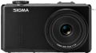

器材库 > 不可换镜头数码相机 > DP2 Merrill

规格总览
发布日期
2012-02-08
影像规格
影像传感器
Foveon X3
影像传感器尺寸
23.5×15.7mm
总像素
4800万
有效像素
4600万
影像处理器
双TRUE II真像图像处理引擎
静态图像尺寸
RAW：4704x3136x3、3264x2176x3、2336x1568x3；JPEG:4704x3136、3264x2176、2336x1568
静态图像格式
JPEG, RAW, RAW+JPEG
画幅比
3:2
短片尺寸
640x480@30fps
短片格式
AVI
镜头和对焦
镜头结构
8片/6组
焦距
30mm
等效35mm画幅焦距
45mm
最大光圈
f/2.8
数码变焦
3倍
最近对焦距离
28cm
自动对焦系统
相比检测系统
对焦模式
AF / MF
AF辅助灯
有
手动对焦
支持
曝光控制
测光模式
中央重点测光, 多分区评价测光, 点测光
曝光模式
P（程序自动曝光）, A（光圈优先自动曝光）, S（快门速度优先自动曝光）, M（手动测光曝光）
快门速度
1/2000秒 - 15秒
曝光补偿
±3EV以1/3EV级调整
自动包围曝光
正常、过曝、欠曝，以1/3EV级增至±3EV曝光
ISO感光度
100, 200, 400, 800, 1600, 3200
白平衡
日光, 白炽灯, 闪光灯, 阴天, 自定义, 阴影, 自动, 钨丝灯
自拍
10秒, 2秒
连拍
每秒1张
闪光灯
内置闪光灯
固定
闪光模式
自动, 慢速同步, 减轻/消除红眼
闪光涵盖范围
30cm - 3m （ISO 自动）
取景规格
LCD类型
彩色TFT LCD
LCD尺寸
3.0英寸
LCD像素
92万
文件输入/输出
存储卡
SD/SDHC
数据接口
USB2.0
视频/音频接口
AV 输出
电源
电池
锂离子电池BP-41
外观
颜色
黑色
尺寸
121.5 x 66.7 x 59.2mm
重量
330g
散客2015-05-22 12:434.19 分
操作性 4.50功能性 3.50美观性 4.00趣味性 3.50耐用性 4.00性价比 4.50解像力 5.00色彩还原 4.50
lollie2015-05-21 17:214.63 分
操作性 5.00功能性 4.50美观性 4.50趣味性 4.50耐用性 4.00性价比 4.50解像力 5.00色彩还原 5.00
weiyang10022014-05-04 10:204.38 分
操作性 4.50功能性 4.50美观性 4.50趣味性 4.50耐用性 4.00性价比 4.00解像力 4.50色彩还原 4.50
passking2014-04-30 15:404.38 分
操作性 4.50功能性 4.50美观性 4.50趣味性 4.00耐用性 4.00性价比 4.50解像力 4.50色彩还原 4.50
gg889r2012-12-14 22:233.81 分
操作性 4.50功能性 4.50美观性 3.00趣味性 3.00耐用性 3.00性价比 3.00解像力 5.00色彩还原 4.50
superlong52012-09-07 16:464.19 分
操作性 4.50功能性 4.00美观性 4.50趣味性 5.00耐用性 3.50性价比 2.50解像力 5.00色彩还原 4.50
产品图 / 样片
评测 / 相关文章
- 详细内容 （存档）
- 画质优异 适马DP2 Merrill评测 （存档）
- ［资讯］DIY：DP2M拨轮清理 （存档）
- ［试用］X3眼中的博物馆珍品 （存档）
- ［试用］DP2M对比DP2Q第一回合 （存档）
- ［试用］逐步实现器材小型化，玩玩DP2M （存档）
- ［试用］追求完美--用DP雕琢美丽的光影 （存档）
- ［试用］DP2M眼中的葡萄牙 （存档）
- ［试用］适马DPM系列配件改造及与D3X画质对比 （存档）
- ［资讯］适马公布DP1/DP2 Merrill最新固件 （存档）
- ［试用］DP2M：锐利、纯净、鲜艳！ （存档）
- ［资讯］适马DP2 Merrill官方样片欣赏 （存档）
相关文章
- ［资讯］DIY：DP2M拨轮清理 （存档）
- ［试用］X3眼中的博物馆珍品 （存档）
- ［试用］DP2M对比DP2Q第一回合 （存档）
- ［试用］逐步实现器材小型化，玩玩DP2M （存档）
- ［试用］追求完美--用DP雕琢美丽的光影 （存档）
- ［试用］DP2M眼中的葡萄牙 （存档）
- ［试用］适马DPM系列配件改造及与D3X画质对比 （存档）
- ［资讯］适马公布DP1/DP2 Merrill最新固件 （存档）
- ［试用］DP2M：锐利、纯净、鲜艳！ （存档）
- ［资讯］适马DP2 Merrill官方样片欣赏 （存档）
- ［资讯］修正红色溢出 适马更新Photo Pro软件 （存档）